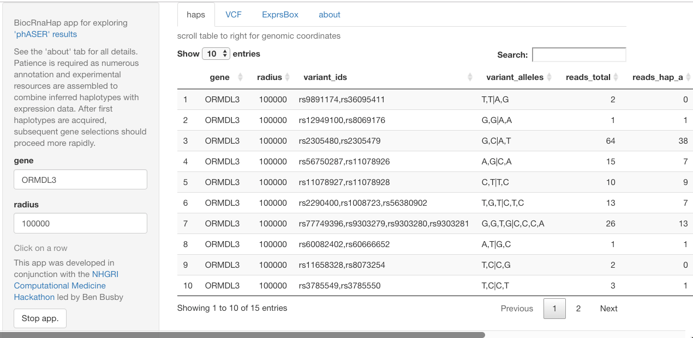

Vincent Carey Biostatistics/Genome Bioinformatics

Vince Carey's team does Bioconductor, NHGRI AnVIL, and various NIH clinical trials
Prototypical use of RNA-seq-derived haplotypes based on phASER
This is a result of a collaborative effort in the NHGRI Computational Medicine Hackathon to commence a realization of Ben Busby’s vision of haplotype inference based on RNA-seq (and possibly ‘global screening arrays’).
Martin Steinegger wrangled phASER (Castel et al. 2016 paper; github repo for phASER source) to obtain a set of haplotype assertions for NA06896. These are wrapped up in an R package defining various methods for combining these SNP configurations with annotation and expression data. For this app, we take advantage of the GEUVADIS RNA-seq quantifications in the Bioconductor geuvPack package.
The interface is currently gene-centric. After entering a gene symbol, RNA-derived haplotypes present within a certain radius around the gene body are tabulated.

The user can click on one row to obtain GEUVADIS genotypes for the selected SNPS. The expression data for the selected gene is then stratified by the implied haplotypes and plotted.